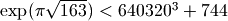

The mpi type holds an interval defined by a pair of mpf values. Arithmetic on intervals uses conservative rounding so that, if an interval is interpreted as a numerical uncertainty interval for a fixed number, any sequence of interval operations will produce an interval that contains what would be the result of applying the same sequence of operations to the exact number.
You can create an mpi from a number (treated as a zero-width interval) or a pair of numbers. Strings are treated as exact decimal numbers (note that a Python float like 0.1 generally does not represent the same number as its literal; use '0.1' instead):
>>> from mpmath import *
>>> mp.dps = 15
>>> mpi(3)
mpi(mpf('3.0'), mpf('3.0'))
>>> print mpi(3)
[3.0, 3.0]
>>> print mpi(2, 3)
[2.0, 3.0]
>>> print mpi(0.1) # probably not what you want
[0.10000000000000000555, 0.10000000000000000555]
>>> print mpi('0.1') # good, gives a containing interval
[0.099999999999999991673, 0.10000000000000000555]
The fact that '0.1' results in an interval of nonzero width proves that 1/10 cannot be represented using binary floating-point numbers at this precision level (in fact, it cannot be represented exactly at any precision).
Some basic examples of interval arithmetic operations are:
>>> print mpi(0,1) + 1
[1.0, 2.0]
>>> print mpi(0,1) + mpi(4,6)
[4.0, 7.0]
>>> print 2 * mpi(2, 3)
[4.0, 6.0]
>>> print mpi(-1, 1) * mpi(10, 20)
[-20.0, 20.0]
Intervals have the properties .a, .b (endpoints), .mid, and .delta (width):
>>> x = mpi(2, 5)
>>> x.a
mpf('2.0')
>>> x.b
mpf('5.0')
>>> x.mid
mpf('3.5')
>>> x.delta
mpf('3.0')
Intervals may be infinite or half-infinite:
>>> print 1 / mpi(2, inf)
[0.0, 0.5]
The in operator tests whether a number or interval is contained in another interval:
>>> mpi(0, 2) in mpi(0, 10)
True
>>> 3 in mpi(-inf, 0)
False
Division is generally not an exact operation in floating-point arithmetic. Using interval arithmetic, we can track both the error from the division and the error that propagates if we follow up with the inverse operation:
>>> print 1 / mpi(3)
[0.33333333333333331483, 0.33333333333333337034]
>>> print 1 / (1 / mpi(3))
[2.9999999999999995559, 3.0000000000000004441]
The same goes for computing square roots:
>>> print sqrt(mpi(2)) ** 2
[1.9999999999999995559, 2.0000000000000004441]
By design, interval arithmetic propagates errors, no matter how tiny, that would get rounded off in normal floating-point arithmetic:
>>> print mpi(1) + mpi('1e-10000')
[1.0, 1.000000000000000222]
Interval arithmetic uses the same precision as the mpf class; if mp.dps = 50 is set, all interval operations will be carried out with 50-digit precision. Of course, interval arithmetic is guaranteed to give correct bounds at any precision (in the absence of bugs!), but a higher precision makes the intervals narrower and hence more accurate:
>>> mp.dps = 5
>>> print mpi(pi)
[3.141590118, 3.141593933]
>>> mp.dps = 30
>>> print mpi(pi) # doctest: +ELLIPSIS
[3.14159265358979...793333, 3.14159265358979...797277]
It should be noted that the support for interval arithmetic in mpmath is still somewhat primitive, but the standard arithmetic operators +, -, *, /, ** and sqrt() should work correctly. It is also possible to call the functions exp(), log(), sin(), cos(), tan() with interval arguments. Here are some examples:
>>> mp.dps = 15
>>> print mpi(0.5, 1.5) ** mpi(0.5, 1.5)
[0.35355339059327373086, 1.837117307087383633]
>>> print exp(mpi(0))
[1.0, 1.0]
>>> print exp(mpi(-inf, inf))
[0.0, +inf]
>>>
>>> print exp(mpi(-inf, 0))
[0.0, 1.0]
>>> print exp(mpi(0, inf))
[1.0, +inf]
>>> print exp(mpi(0, 1))
[1.0, 2.7182818284590455349]
>>>
>>> print log(mpi(1))
[0.0, 0.0]
>>> print log(mpi(0,1))
[-inf, 0.0]
>>> print log(mpi(0,inf))
[-inf, +inf]
>>> print log(mpi(2))
[0.69314718055994528623, 0.69314718055994539725]
>>>
>>> print sin(mpi(100, inf))
[-1.0, 1.0]
>>> print cos(mpi('-0.1', '0.1'))
[0.99500416527802570954, 1.0]
Interval support will be added to more functions in the future.
Interval arithmetic can be used to establish inequalities such as . The left-hand and right-hand sides in this inequality agree to over 30 digits, so low-precision arithmetic may give the wrong result:
>>> mp.dps = 25
>>> exp(pi*sqrt(163)) < (640320**3 + 744)
False
The answer should be True, but the rounding errors are larger than the difference between the numbers. To get the right answer, we can use interval arithmetic to check the sign of the difference between the two sides of the inequality. Interval arithmetic does not tell us the answer right away if we keep mp.dps = 25, but it is honest enough to admit it:
>>> print exp(pi * sqrt(mpi(163))) - (640320**3 + 744)
... # doctest: +ELLIPSIS
[-0.0000003576..., 0.00000029429...]
There is both a negative and a positive endpoint, so we cannot tell for certain whether the true difference is on one side or the other of zero. The solution is to increase the precision until the answer is strictly one-signed:
>>> mp.dps = 35
>>> print exp(pi * sqrt(mpi(163))) - (640320**3 + 744)
... # doctest: +ELLIPSIS
[-7.499493...e-13, -7.499237...e-13]
Intervals may be used in matrices. See the matrix documentation page for details.